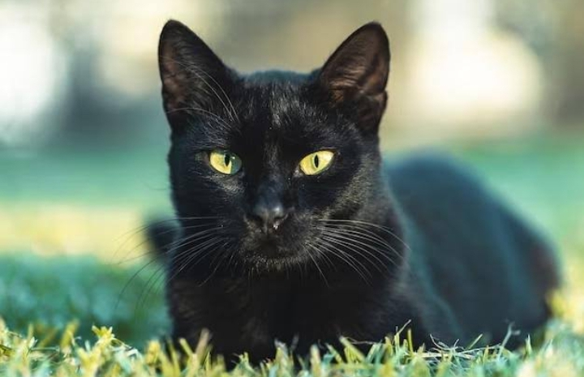
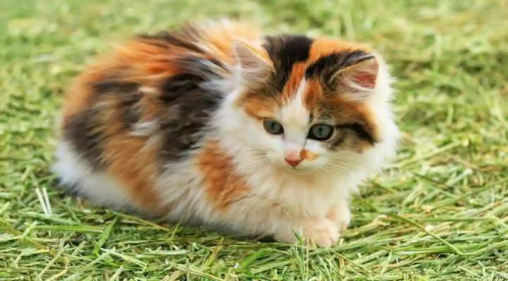

🧡 Kucing Oren
Kucing oren memiliki bulu berwarna jingga atau oranye. Kucing ini terkenal aktif, lucu, dan menggemaskan.
Mengenal Berbagai Warna Kucing
Teman lucu yang menggemaskan 💗
Kucing oren memiliki bulu berwarna jingga atau oranye. Kucing ini terkenal aktif, lucu, dan menggemaskan.

Kucing putih memiliki bulu berwarna putih polos yang terlihat bersih dan indah. Warnanya dapat ditemukan pada berbagai ras kucing.

Kucing hitam mempunyai bulu berwarna gelap karena pigmen eumelanin. Penampilannya terlihat unik dan elegan.

Kucing calico memiliki kombinasi tiga warna bulu, yaitu putih, hitam, dan oranye.

Kucing abu-abu memiliki warna bulu yang unik, terkadang bercampur dengan warna hitam sehingga terlihat menarik.